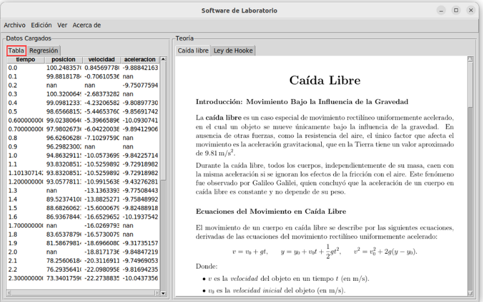
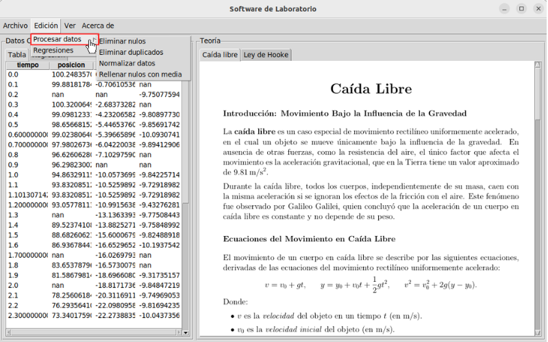
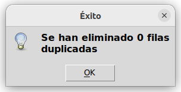
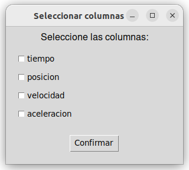
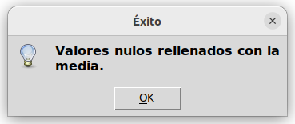

Este sistema permite realizar operaciones de carga, transformación y exportación de datos de manera sencilla y eficiente. El sistema mantiene un registro de todas las transformaciones realizadas y permite exportar tanto los datos procesados como el historial de los cambios realizados.
En el caso de que se intente realizar alguna modificación o se seleccione alguna opción de los menús desplegables, aparecerá una ventana emergente con un mensaje de error indicando que primero se deben importar los datos para poder realizar algún procedimiento.

Datos cargados visualizados en el panel izquierdo de la ventana principal.#
La limpieza y transformación de datos son pasos fundamentales en el ciclo de preparación de datos, con el objetivo de mejorar su calidad y adaptarlos a requerimientos específicos del análisis o modelo. La limpieza de datos involucra la identificación y corrección de errores, como valores nulos, duplicados, inconsistencias o registros inválidos. La transformación de datos, por su parte, se refiere a modificar la estructura o formato de los datos para facilitar su análisis, como la conversión de tipos de datos, la creación de nuevas variables, o la normalización y escalado de los valores. Ambos procesos trabajan de la mano para garantizar que los datos sean precisos, completos y apropiados, permitiendo obtener resultados más confiables y significativos en cualquier tipo de análisis o modelado. Las transformaciones disponibles en NovaLabUD se muestran en el botón de Edición, véase figura Transformaciones de datos disponibles en NovaLabUD..

Transformaciones de datos disponibles en NovaLabUD.#
La eliminación de valores nulos es una técnica común en el procesamiento de datos que busca mejorar la calidad y confiabilidad de los análisis. Los valores nulos representan datos faltantes o desconocidos que, si no se manejan adecuadamente, pueden distorsionar los resultados y afectar la precisión de los modelos predictivos. Existen varias estrategias para tratar estos valores, como eliminarlos directamente, reemplazarlos con la media, mediana o moda del conjunto de datos, o usar algoritmos más avanzados para estimarlos. La elección del enfoque depende del contexto y de la cantidad de información perdida, considerando siempre el equilibrio entre preservar la integridad del conjunto de datos y mantener su representatividad.
El software en cuestión:
Elimina todas las filas que contienen valores nulos.
Muestra la cantidad de filas eliminadas.
La operación es irreversible.
Una vez se haya aplicado la transformación en pantalla se observa un mensaje que indica el estado de la operación realizada, tal como se muestra en la figura Verificación de eliminación de valores nulos..
La eliminación de duplicados es un paso crucial en la limpieza de datos, que consiste en identificar y remover registros redundantes dentro de un conjunto de datos. Los duplicados pueden surgir debido a errores de entrada, integraciones de múltiples fuentes o procesos repetidos, y su presencia puede inflar los resultados o introducir sesgos en los análisis. Esta tarea asegura que cada observación sea única, mejorando la precisión y consistencia del análisis. Dependiendo del caso, se pueden eliminar registros completamente idénticos o aquellos que coincidan en ciertos campos clave. Es importante revisar cuidadosamente antes de eliminar duplicados, especialmente si contienen información relevante en campos no redundantes.
El software lleva a cabo las siguientes funciones:
Elimina filas duplicadas manteniendo la primera ocurrencia.
Considera todas las columnas para determinar duplicados.
Muestra la cantidad de filas eliminadas.
En caso de que el conjunto de datos no tenga ningún valor duplicado, igualmente se mostrará en una ventana emergente el estado de la operación, como se ilustra en la figura Verificación del estado para la eliminación de duplicados. (Se muestran mensajes similares para los demás tipos de procesamiento de datos).

Verificación del estado para la eliminación de duplicados.#
La normalización de datos es un proceso esencial en la preparación de datos que consiste en ajustar los valores de un conjunto para que se encuentren dentro de un rango común, como de 0 a 1 o de -1 a 1. Este paso resulta útil cuando los datos provienen de diferentes escalas, ya que asegura que todas las variables contribuyan de manera equitativa al análisis o a los modelos de aprendizaje automático. La normalización mejora la convergencia de los algoritmos, como los de regresión logística o redes neuronales, y reduce el impacto de las magnitudes absolutas en las métricas de similitud o distancia. Existen métodos como la normalización min-max o la estandarización, y la elección del enfoque depende del contexto y del tipo de análisis que se desea realizar.
El programa cumple con normalizar todas las columnas numéricas al rango [0,1] teniendo en cuenta las siguientes consideraciones:
Si todos los valores son iguales, se establecen en 0.
Solo afecta a columnas con al menos un valor no nulo.
Cabe aclarar que solo se normalizan las columnas que se seleccionen al momento de ejecutar la operación.

Selección de las columnas que se buscan normalizar.#
Como en los casos anteriores, se mostrará en pantalla una ventana que notifica el estado de la transformación. Del mismo modo, el cambio efectuado en el conjunto de datos se visualizará automáticamente en pantalla.
El rellenado de valores nulos es una técnica utilizada en el procesamiento de datos para manejar la ausencia de información sin descartar los registros afectados. Este método consiste en reemplazar los valores faltantes con datos estimados, como la media, mediana o moda de la columna correspondiente, valores constantes o incluso predicciones generadas por modelos avanzados. El enfoque elegido depende del tipo de datos y de su distribución, ya que un relleno inadecuado podría introducir sesgos o afectar la interpretación de los resultados. Al completar los valores nulos de manera cuidadosa, se preserva la integridad del conjunto de datos, facilitando análisis más robustos y modelos predictivos más precisos.
La funcionalidad de esta sección permite:
Rellenar los valores nulos con la media de cada columna. Nota: Solo aplica a columnas numéricas.
Mostrar la cantidad de valores rellenados.
Al igual que en el tratamiento anterior el software solicita al usuario las columnas especificas a las cuales se deseo aplicar la operación, véase la figura Selección de las columnas que se buscan normalizar.. Además, se mostrará un mensaje con la operación realizada y los cambios se visualizarán en la ventana principal de manera automática.

Verificación del estado para el rellenado de datos nulos.#
La exportación de resultados es una etapa clave en el manejo de datos, que permite guardar la información procesada o los análisis realizados en un formato que facilite su uso posterior o su distribución. Los formatos más comunes incluyen csv, Excel, JSON y bases de datos, dependiendo de los requisitos del proyecto y las herramientas utilizadas. En la aplicación NovaLabUD, se manejan tres tipos de exportación sobre el conjunto de datos transformado, las cuales son: csv, xlsx y txt.
Este proceso no solo asegura la portabilidad y reutilización de los datos, sino que también facilita la integración con otros sistemas o aplicaciones. Es importante implementar buenas prácticas durante la exportación, como incluir encabezados claros, asegurar la coherencia de los formatos y documentar el contenido exportado para garantizar su correcta interpretación y uso en el futuro.
El sistema mantiene un registro detallado de todas las transformaciones realizadas, incluyendo:
Tipo de operación.
Fecha y hora de ejecución.
Detalles específicos de la operación.
Número de filas afectadas.
El resumen de las transformaciones se visualiza en el archivo que hace alusión a las transformaciones dependiendo el tipo de exportación seleccionado, los cuales fueron tratados en la sección anterior.